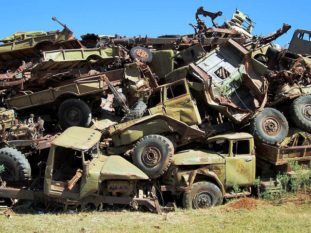
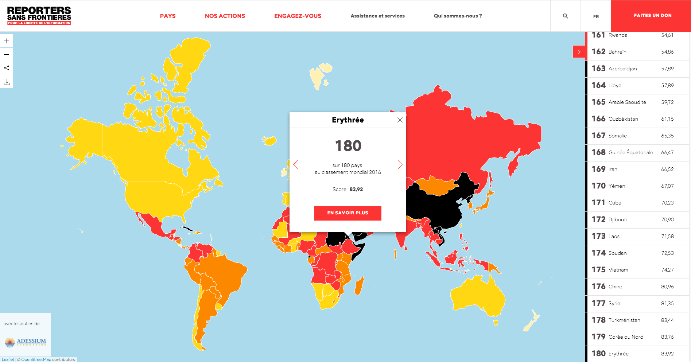

Tournez le bouton de gauche pour écouter les interviews
Appuyez sur les boutons du bas pour changer de chapitre
Chapitre 2 : En Érythrée, des soldats à vie
“Quand je demandais aux enfants ce qu’ils voulaient faire quand ils seraient grands, ils n’avaient aucun espoir”, rapporte Meron Estefanos. “Ils me répondaient, sans enthousiasme, ‘je serai soldat’, et ils avaient raison.” Elle a eu de la chance : sa famille érythréenne a émigré en Europe avant la naissance officielle de l’Erythrée, et a pu obtenir la nationalité suédoise. En 2002, elle est retournée volontairement en Erythrée, mais n’y est restée que deux ans. “J’étais choquée. À l’époque, je n’avais aucune idée de ce qu’il s’y passait.”
Annexe de l’Ethiopie depuis 1962, l’Érythrée obtient son indépendance en 1993, après une guérilla meurtrière qui aura duré 30 ans et coûté la vie à plus de 150 000 personnes. Immédiatement, son président, Isaias Afwerki, figure emblématique du Front Populaire de Libération instaure un service national obligatoire pour reconstruire le pays et se défendre contre une éventuelle réplique éthiopienne. À 17 ans, tous les lycéens, hommes et femmes, sont envoyés au camp militaire de Sawa. Ils y restent six mois, avant d'être placé au un service de l’État pour douze mois - c’est du moins ce que dit la loi.
“On était contents de servir”, reconnaît Biniam Simon, le fondateur de la radio Erena. À 22 ans, il faisait partie de la première génération des mobilisés. Il a même volontairement prolongé son service pour une année supplémentaire au ministère de l’Information, avant de déserter en janvier 2007. Car dans la pratique, la durée du service militaire est illimitée, expliquent les Erythréens.
« Il n’y a pas d’avenir en Erythrée »
Human Rights Watch l'a confirmé; en Érythrée, tout citoyen est soldat à vie. “Ils vous envoient dans des postes de garde ou dans des ministères”, explique Biniam, revenu de ses illusions de jeunesse. “Il n’y a pas d’avenir en Erythrée.” Amanuel Ghirmay, également journaliste à Erena, servait dans un bataillon de 22 000 soldats. “Nous ne sommes qu'un millier à avoir pu arrêter pour intégrer l’université”, indique-t-il. Son visage est sombre, caché par des lunettes couleur terre. “21 000 y sont encore.”
“Je n’ai rien contre l’idée d’un service national, et je ne vais pas me plaindre des conditions de vie dans notre pays”, poursuit Amanuel. “Ce à quoi je m’oppose, c’est la manière dont ce gouvernement vous contrôle jusqu’à la fin de votre vie. Sawa, c’est un atelier de formatage.” Ce service national est l'une des principales raisons du départ de nombreux Erythréens affirme un rapport d'Amnesty International.
 Un cimetière de camions blindés près de la capitale, Asmara, Flickr/David Stanley
Isaias Afwerki a aujourd’hui 71 ans, mais personne n’ose imaginer une autre Érythrée. En mai 2008, le chef d’État avait déclaré sur la télévision publique que des élections seraient peut-être organisées d’ici trois à quatre décennies : il ne compte pas partir avant.
« Quand il mange au restaurant, Isaias échange souvent son assiette avec un associé, apparement pour éviter d’être empoisonné »
“Quand il mange au restaurant, Isaias échange souvent son assiette avec un associé, apparement pour éviter d’être empoisonné”, rapporte une note confidentielle du 12 novembre 2008 de l’ambassadeur des États-Unis en Érythrée, publiée par Wikileaks. “Il a une aversion pour le téléphone et dort régulièrement à différentes locations pour éviter une tentative de coup d’Etat ou d’assassinat.”
Président discret formé à l’académie militaire de Nanjing en Chine maoïste, Isaias Afwerki ne cultive aucun culte de la personnalité. Il est décrit comme un homme “obtu, têtu, brutal et de plus en plus paranoïaque” selon Léonard Vincent, auteur des Érythréens (Rivages, 2012), livre basé sur ses interviews avec les fugitifs. “Isaias Afwerki s’est radicalisé, il s’est isolé et enfermé dans sa logique autoritaire.”
En Érythrée, société, parti politique et pays ne font qu’un, laissant peu de place pour la contestation. “La dénonciation, la surveillance, ce n’est pas quelque chose organisé uniquement par une administration : c’est un état d’esprit”, affirme Léonard Vincent. “Les Érythréens considèrent qu’une mise à plat de ce système ferait peser un risque de disparition de cet État pour lequel ils ont combattu.”
Terreur psychique, terreur policière
Un système totalitaire parfait “qui ne fait que perpétuer les conditions de sa propre survie”, Léonard Vincent en est convaincu. La vie politique dépend des “caprices” du président, qui n’hésite pas à changer d’alliance comme il change de chemise. “Le général sur lequel Isaias s’appuie pour faire régner l’ordre était il y a deux ans en disgrâce, il était presque considéré comme un putschiste”, s’amuse ce passionné du pays, ancien chef du bureau Afrique de Reporter Sans Frontières (RSF). Il décrit le régime comme une famille mafieuse avec son caïd et ses capo-régimes qui donnent des ordres aux représentants officiels.
L’Érythrée est l'un des seuls pays au monde qui requiert un visa pour en sortir. À l’intérieur, il faut également un permis pour se déplacer d’un village à l’autre. Le territoire est entièrement quadrillé par des postes militaires. “On ne fait pas confiance à ses amis, ses collègues, ses voisin ni même sa famille”, confie Biniam, car tout Érythréen peut potentiellement vous dénoncer.
“On a tous mis du temps à comprendre la nature de ce régime, moi le premier”, s'attriste Biniam. En 1999, son collègue Amanuel était encore étudiant à l’université d’Asmara, fermée depuis. “L’été, l’Etat avait envoyé 900 étudiants sur des champs de coton pour travailler. Nous, on aurait voulu faire autre chose comme enseigner dans les villages, mais nous n'avons pas eu le choix”, se souvient Amanuel. Deux semaines durant, ses camarades et lui avaient alors manifesté dans les rues de la capitale Asmara - une situation aujourd’hui impensable. “Le gouvernement nous a convoqué au stade pour un rassemblement, mais c’était un piège”, décrit-il. “Ils nous ont tous arrêtés, et deux de mes camarades sont morts en prison.”
Pour 80% de la population qui vit dans des fermes ou des villages et dont l’Etat réquisitionne régulièrement les cultures, “la meilleure attitude est de se taire, de se faire petit et de prier pour de la pluie”, écrit l’ancien ambassadeur américain Ronald K. Mullen dans un courrier.
« Les Érythréens continuent à être sujets à un service national indéfini, à la détention arbitraire, à la torture, à des disparitions à bras armé »
En septembre 2001, une série de purges dans les ministères et les médias a marqué le début d'arrestations routinières. Parmi les 20 personnes alors jetées en prison, la plupart n'en sont pas ressorties. Le rapport du groupe de contrôle sur la Somalie et l’Érythrée des Nations Unies de 2016 note que “les Érythréens continuent à être sujets à un service national indéfini, à la détention arbitraire, à la torture, à des disparitions à bras armé, à des réprimandes pour le comportement supposé de membres de la famille, à une discrimination sur la base de leur religion et de leur communauté ethnique, à de la violence sexuelle à l’égard des femmes, et à des tueries.” Felix Horne, rapporteur pour Human Rights Watch, en retient la même impression : “La plupart des personnes rencontrées ont passé du temps en prison, souvent dans des bunkers souterrains ou dans des conteneurs.”
 Classement de la liberté de la presse 2016, Reporters Sans Frontières
Selon RSF, l’Erythrée est depuis 2007 le dernier pays au monde pour la liberté de la presse. L’information est étroitement surveillée, les arrestations de journalistes nombreuses. “Ce sur quoi je voulais enquêter ne plaisait pas au gouvernement”, raconte Fathi Osmane, un autre journaliste d’Erena qui a travaillé deux ans pour le ministère de l’Information avant de devenir ambassadeur. Las de ces refus, il a préféré quitter ce poste “pour n'être que diplomate.” “Tu apprends à t’auto-censurer quand tu écris un article”, confirme Amanuel.
Les Érythréens n’ont accès à l’information que par les médias officiels de l’Etat : tous les autres ont été fermés en 2001, et l’accès à internet est extrêmement réduit, aux alentours de 1% estime Léonard Vincent, qui précise que celui-ci ne peut se faire que dans des cybercafés où les connexions sont lentes et surveillées.
Amanuel n’était pas surpris quand ses collègues ont fait défection. “C’est un métier dangereux, mais le pire, c’est de se mentir en permanence”, dénonce Biniam, présentateur star malgré lui de la télé érythréenne. “Tu vas à une réunion ministérielle, tu entends quelque chose mais tu dois dire au peuple quelque chose de complètement différent. Combien de temps peux tu vivre comme ça ?” Amanuel ne l’a pas supporté. Il a fui l'Erythrée le 15 juin 2009 afin de rejoindre Erena en France.